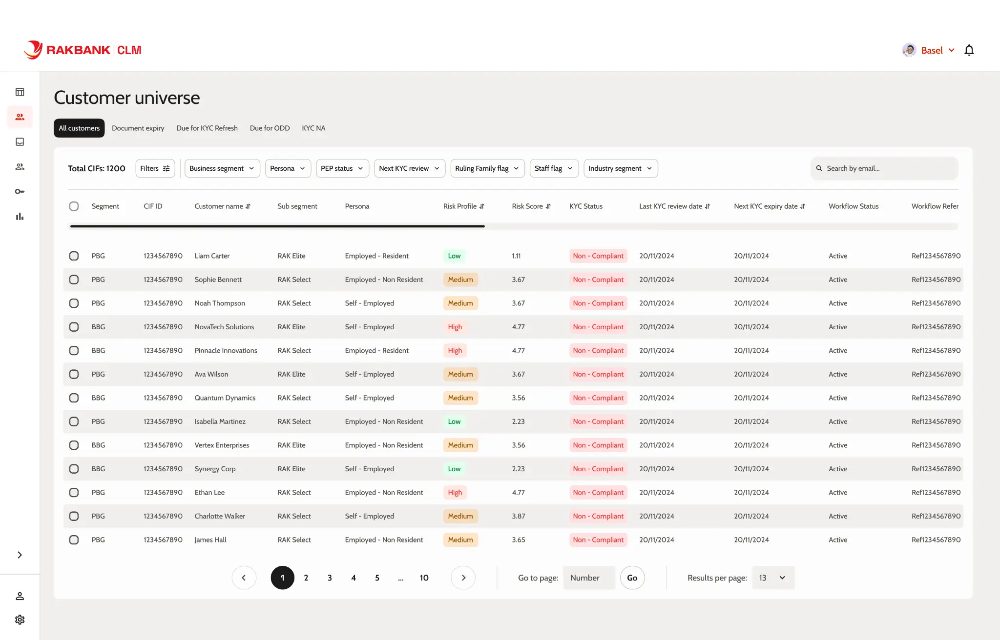
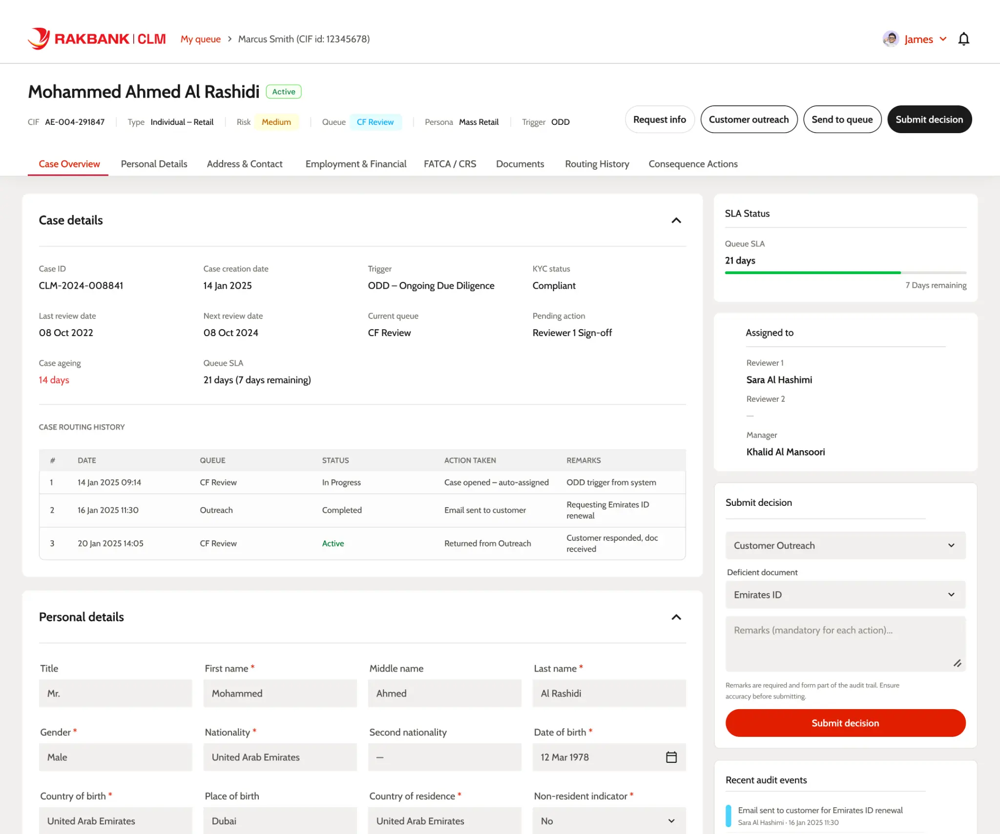

CLM — Проектирование там, где цена ошибки высока
Переосмысление платформы управления жизненным циклом клиентов RAKBANK, чтобы дать командам по соответствию консолидированную видимость, защищённые аудиторские следы и уверенность в каждом решении.
KYC — это не функция. Это юридическое обязательство.
RAKBANK обслуживает миллионы клиентов в сфере личного и корпоративного банкинга. Каждые отношения с клиентом несут регуляторные обязательства — проверки «Знай своего клиента» (KYC), Текущая надлежащая проверка (ODD), профилирование рисков, верификация документов и проверка PEP — всё регулируется нормативами Центрального банка ОАЭ.
Платформа CLM (Управление жизненным циклом клиента) — это внутренняя система, где сотрудники по соответствию, бизнес-лидеры и менеджеры по работе с клиентами отслеживают, расследуют и действуют в отношении статуса KYC каждого клиента банка. Когда эта система даёт сбой, последствия — не UX-трение, а регуляторные штрафы, выводы аудита и личная ответственность сотрудников по соответствию.
Разрозненные данные, слепые зоны и нет чёткого пути от сигнала к действию
До этого проекта команды по соответствию полагались на фрагментированный ландшафт несвязанных инструментов и ручных процессов для управления обязательствами жизненного цикла клиентов. Постоянно возникали три основные проблемы:
Нет консолидированной видимости
У сотрудников по соответствию не было единого представления о состоянии KYC банка. Распределение рисков, истекающие документы и просроченные проверки были разбросаны по нескольким системам — что делало невозможным расстановку приоритетов в масштабе.
Нет пути детализации
Не было связанного опыта от общего обзора соответствия банка до профиля конкретного клиента. Сотрудникам приходилось переключаться между дашбордами, таблицами и репозиториями документов для расследования одного дела.
Пробелы в готовности к аудиту
Профили клиентов не имели структурированных одностраничных представлений для утверждения проверяющим. Отсутствующие и просроченные поля документов не были выделены. Не было простого способа экспортировать защищённую, полную запись клиента.
Дизайн для людей, которые оптимизируют правильность, а не скорость
Платформа CLM обслуживает три отдельные пользовательские роли, каждая с разными обязанностями по принятию решений. Ключевое понимание на раннем этапе состояло в том, что эти пользователи не воспринимают платформу как инструмент повышения производительности — они видят её как систему контроля, общий источник истины и свидетеля, который фиксирует, кто что сделал, когда и почему.
Бизнес-лидеры
Нуждаются в высокоуровневых метриках состояния соответствия по сегментам и бизнес-единицам. Они спрашивают: «Где мы наиболее уязвимы?» и используют платформу для распределения ресурсов и эскалации рисков.
Сотрудники по соответствию
Основные операторы. Они проверяют списки клиентов, расследуют отдельные профили, верифицируют документы и принимают решения, которые должны выдержать аудит. Им нужен полный контекст и чёткие следующие шаги.
Менеджеры по работе с клиентами
Взаимодействуют с клиентами для сбора документов и решения ожидающих вопросов. Им нужно понимать, что отсутствует, что просрочено и что клиент должен предоставить — без глубокой экспертизы в области соответствия.
«Сотрудники по соответствию не хотят, чтобы система была быстрой. Они хотят, чтобы она была правильной. Они хотят доказать, что приняли правильное решение.»
— Из ранних разговоров со стейкхолдерами
Трёхуровневая информационная архитектура
Вместо того чтобы проектировать один сложный экран, я структурировал платформу как три прогрессивных уровня — каждый выполняет отдельную когнитивную функцию. Пользователи переходят от макро к микро, от ориентации к действию, причём каждый уровень предоставляет контекст, необходимый для следующего.
Уровень обзора
Дашборд — «Где мы уязвимы?»
Уровень управления
Список клиентов — «Кому нужно внимание?»
Уровень детализации
Профиль клиента — «Какова полная картина?»
Уровень действий
Просмотр, экспорт, утверждение — «Действуй уверенно»
Уровень обзора
Дашборд даёт бизнес-лидерам и сотрудникам по соответствию снимок состояния соответствия — показывая общие объёмы клиентов, распределение рисков, задолженности по проверкам KYC и эффективность охвата. Он отвечает на вопрос: «Где банк наиболее уязвим прямо сейчас?»

Карточка вселенной клиентов
Общее количество клиентов с изменением за период и накопленная гистограмма рисков, показывающая распределение Высокий/Средний/Низкий с первого взгляда.
Конвейер проверок KYC
Общее количество клиентов, требующих действий, разбитых на Истечение срока документов, Помечены для обновления KYC и Текущую надлежащую проверку.
Прямая детализация
Ссылка «Просмотр» каждой карточки передаёт предварительно применённые фильтры в уровень Списка клиентов, поэтому переход контекстуален.
Панель эффективности охвата
Отслеживает автоматически запущенные охваты, показатели ответов, неудачные охваты и действия по последствиям.
Фильтры сегментов и времени
Селекторы бизнес-единиц и временного диапазона (Неделя/Месяц/Год) позволяют лидерам сравнивать позицию соответствия по сегментам.
Боковая панель полезных ресурсов
Быстрые ссылки на Стандарты документации KYC, Матрицу ролей и утверждений и Руководство по оценке рисков.
РАССМАТРИВАЛОСЬ
Дашборд на основе вкладок с отдельными представлениями для каждой метрики. Разделение обзора рисков, проверок KYC и охвата на отдельные вкладки снизило бы плотность, но заставило бы сотрудников мысленно собирать картину соответствия.
ВЫБРАННЫЙ ПОДХОД
Единый прокручиваемый дашборд с информационной иерархией. Унифицированное представление с визуальной иерархией — большие числа для ориентации, накопленные гистограммы для распределения, карточки разбивки для расследования.
Уровень управления
Список клиентов — это операционная рабочая лошадка, где сотрудники по соответствию ищут, фильтруют и действуют в отношении групп клиентов по всему банку. Он отвечает: «Какие клиенты требуют внимания и каково их текущее состояние?»

Сегментация на основе вкладок
Все клиенты, Истечение срока документов, Требуется обновление KYC, Требуется ODD и KYC NA предварительно фильтруют таблицу по потребности в соответствии.
Многоосевая фильтрация
Бизнес-сегмент, Персона, Статус PEP, Следующая проверка KYC, Флаг правящей семьи, Флаг сотрудника и фильтры по отраслевому сегменту.
Цветовая кодировка профилей рисков
Красный (Высокий), Жёлтый (Средний), Зелёный (Низкий) значки рисков для мгновенного визуального сканирования сотен записей.
Сортируемые столбцы с закреплёнными заголовками
Балл риска, Имя клиента, Дата последней проверки KYC и Дата следующего истечения KYC — все сортируемые.
Массовые действия
Выберите несколько CIF для Назначения ODD, Переназначения, Закрытия рабочего процесса, Изменения пула или Экспорта.
Прямая детализация строки
Нажатие на любую строку открывает уровень детализации Профиля клиента, перенося весь контекст.
Уровень детализации
Профиль клиента — единый источник истины для записи KYC отдельного клиента. Он разработан как одностраничное, экспортируемое, готовое к аудиту резюме — каждое поле, документ и действие видны в одной прокрутке, ничего не скрыто за вкладками или модалами.

Постоянная панель идентификации
Номер дела, ID CIF, Статус CIF, Персона, Статус PEP и Профиль риска всегда видны вверху, обеспечивая немедленный контекст.
Связанные документы со встроенным предварительным просмотром
Карточки паспорта, Emirates ID и Подтверждения проживания с кнопками «Предварительный просмотр» — без выхода из профиля.
Выделение просроченных/отсутствующих полей
Поля, которые просрочены, отсутствуют или требуют повторной верификации, визуально помечены для выявления пробелов.
Панель действий по соответствию
Кнопки Редактировать, Запросить поддержку RM, Отправить для повторного охвата клиента и Утвердить и отправить с чёткими метками.
Экспорт PDF для утверждения проверяющим
Полный экспорт профиля в виде структурированного PDF для офлайн-проверки, подписи проверяющего и архивирования.
Навигация по хлебным крошкам
«Моя очередь → Маркус Смит (ID CIF: 12345678)» сохраняет след сотрудника обратно к его рабочему контексту.
«Профиль — это не просто отображение информации — это лист доказательств. Каждое поле, документ и действие на этом экране должны быть защищаемы на аудите.»
Ключевые компромиссы и обоснование
Несколько дизайнерских решений были сформированы специфическими ограничениями программного обеспечения для соответствия — где цена ошибок — регуляторная уязвимость, а не просто UX-трение.
Плоский профиль вместо разделов на вкладках
Данные клиента, документы, адрес и контактная информация — всё на одной прокручиваемой странице. В контексте соответствия скрытая информация — это забытая информация.
Предварительный просмотр документа в боковой панели
Документы открываются в боковой панели, а не на новой странице или в модале. Это сохраняет данные профиля видимыми рядом с просматриваемым документом.
Цвет как система сканирования
Профили рисков используют строгую систему Красный/Жёлтый/Зелёный без декоративного цвета в других местах. Цвет должен нести смысл — это механизм сканирования.
Контекстная детализация вместо глобального поиска
Дашборд → отфильтрованный список → профиль. Каждый переход несёт контекст вперёд, снижая ошибки и экономя когнитивную нагрузку.
Результаты
Переработанная платформа CLM устранила основные структурные проблемы, которые мешали командам по соответствию работать с уверенностью и эффективностью.
Что я узнал
Программное обеспечение для соответствия — это проблема доверия, а не эффективности
Пользователи этой платформы не хотят, чтобы она была быстрой — они хотят, чтобы она была правильной. Каждое дизайнерское решение должно было завоёвывать доверие, делая поведение системы предсказуемым, прослеживаемым и объяснимым.
Информационная архитектура — это и есть дизайн
Трёхуровневая структура (Дашборд → Список → Профиль) была не просто навигацией — это было основное дизайнерское решение. Визуальный дизайн был вторичен по отношению к этой структурной работе.
В регулируемых средах показывать важнее, чем говорить
Встроенный предварительный просмотр документов, видимые значки рисков, постоянные заголовки идентификации — эти паттерны существуют потому, что сотрудники по соответствию не могут доверять тому, чего не видят.